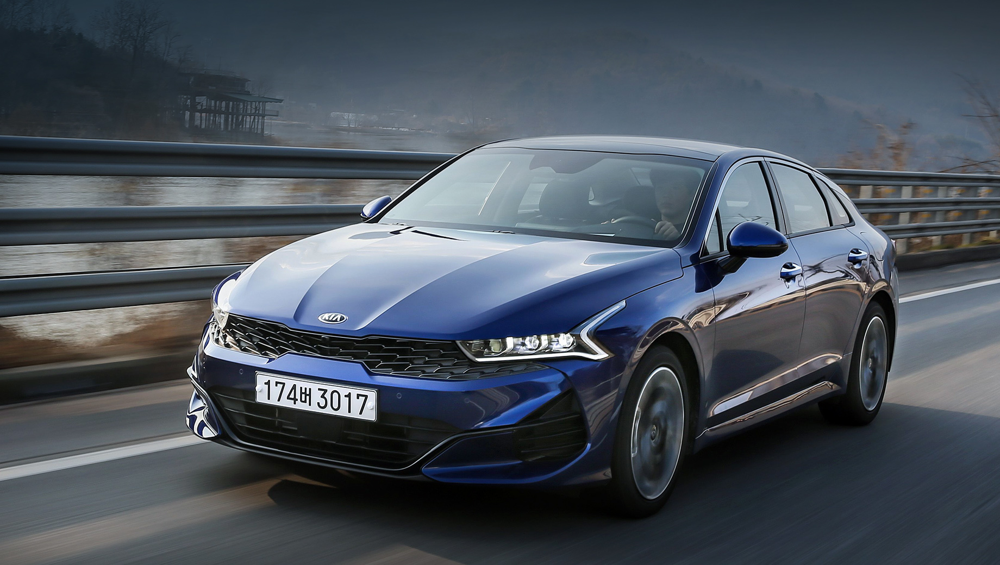
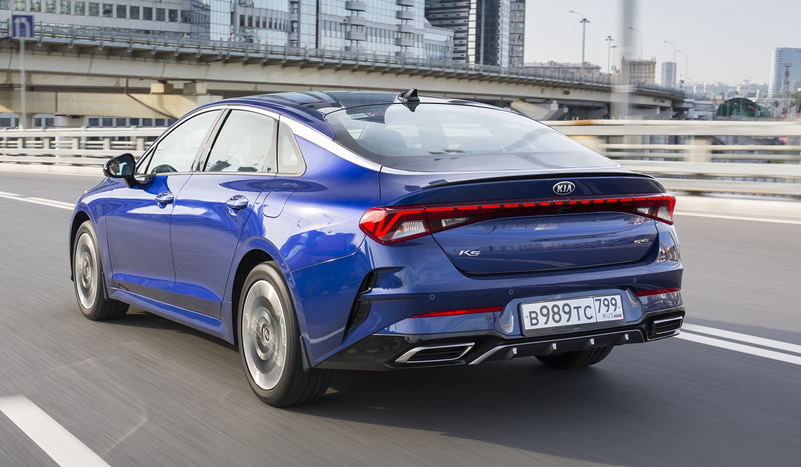
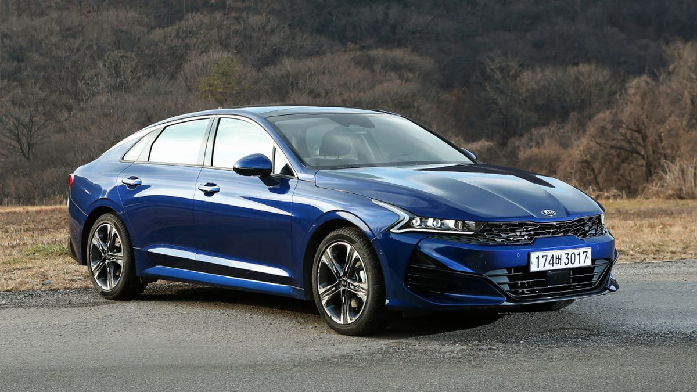

Основана в декабре 1944 года, входила в группу (чеболь) Kia Group, из которого была выделена в 2003 году. Первоначально компания называлась KyungSung Precision Industry,
и только в 1951 году получила наименование KIA Industries. Основным направлением деятельности было создание индивидуальных средств передвижения — велосипедов и мотоциклов.
Выпуск грузовых и легковых машин был налажен только в 1970-х годах. Миллионный автомобиль сошёл с конвейера в 1988 году. В 1990 году компания получила новое название — KIA Motors Inc.
В 1998 году компания погрузилась в финансовый кризис, вызванный резким сокращением продаж. Результатом этого стала потеря самостоятельности: Kia Motors была приобретена корейской
автомобилестроительной компанией Hyundai Motor. В 1999 году была создана группа Hyundai Kia Automotive Group. После этого почти все модели Kia строятся на идентичных платформах от
компании Hyundai, причем на рынок всегда выходит вначале модель под брендом Hyundai, а уже затем на этой же платформе выпускается модель под брендом Kia.
В 2006 году главным дизайнером компании Kia Motors стал немец Петер Шрайер (Peter Schreyer), прежде разрабатывавший дизайн автомобилей Audi и Volkswagen. Одним из главных отличительных
элементов новой дизайн-концепции от Шрайера стала фирменная радиаторная решётка, называемая «нос тигра» ('Tiger Nose', в русском варианте перевода — «оскал тигра»).
В период с 2008 по 2011 годы ежегодные продажи Kia в мире увеличились на 81 % и достигли почти 2,5 млн автомобилей в год.
В 1997 году KIA представила свой первый флагман — свою первую заднеприводную модель люкс-класса, KIA Enterprise. Модель была ориентирована прежде всего на внутренний рынок своей
страны и на другие рынки официально не поставлялась, хотя встречается редко на территории СНГ и Ближнего Востока.
После относительной неудачи с Opirus, была продолжительная пауза в нише люксовых седанов, а в 2012 году KIA представила свою первую заднеприводную модель, по-настоящему имевшую
определенный успех у покупателей, которой стал седан люкс-класса KIA Quoris (в Корее — KIA K9). В конце декабря 2012 года Петер Шрайер стал одним из трёх президентов KIA Motors
(президент по дизайну), сохранив за собой и должность шеф-дизайнера. Впервые одним из президентов южнокорейской KIA Motors стал иностранец.
В 2014 году бренд KIA поднялся уже до 74-й позиции в рейтинге Interbrand, достигнув оценочной стоимости в 5,4 миллиарда долларов США, при этом прирост в процентном отношении —
снова 15 % — значительно превзошёл среднее значение прироста среди Топ-100 рейтинга, составившее 7 %.
Компании принадлежит пять автозаводов в Южной Корее (в том числе крупнейший в мире автосборочный завод в Ульсане), Турции, Северной Америке, Китае, Индии и др. В декабре 2006
года начал работу автомобильный завод в Словакии (Жилина) — «Kia Motors Slovakia». В 2009 году был запущен завод в США (Уэст-Пойнт, Джорджия) мощностью 300 000 автомобилей в год.


